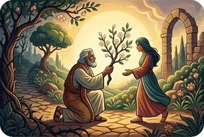

El Libro de Oseas puede dividirse en dos partes: (1) Oseas 1 : 1 – 3 : 5 es una descripción de una esposa adúltera y un esposo fiel, simbólico de la infidelidad de Israel hacia Dios a través de la idolatría, y (2) Oseas 4 : 1 – 14 : 9 contiene la condenación de Israel, especialmente de Samaria, por la adoración de ídolos y su eventual restauración.
La primera sección del libro contiene tres poemas distintivos que ilustran cómo los hijos de Dios regresaban una y otra vez a la idolatría. Dios ordena a Oseas que se case con Gomer, pero después de darle tres hijos, ella se aleja de Oseas para irse con sus amantes. El énfasis simbólico puede verse claramente en el primer capítulo, cuando Oseas compara las acciones de Israel con apartarse de un matrimonio para vivir como una prostituta. La segunda sección contiene la denuncia de Oseas hacia los israelitas, pero seguida por las promesas y las misericordias de Dios.
El Libro de Oseas es un relato profético del amor implacable de Dios por Sus hijos. Desde el principio de los tiempos, la creación ingrata e indigna de Dios ha estado aceptando el amor, la gracia y la misericordia de Dios, aun cuando no es capaz de abstenerse de su maldad.
La última parte de Oseas muestra cómo el amor de Dios restaura una vez más a Sus hijos, ya que Él olvida sus malas acciones cuando se vuelven a Él con un corazón arrepentido. El mensaje profético de Oseas predice la venida del Mesías de Israel 700 años en el futuro. Oseas es citado a menudo en el Nuevo Testamento.
Oseas 2 : 23 es el maravilloso mensaje profético de Dios para incluir a los gentiles como Sus hijos, como también se registra en Romanos 9 : 25 y 1 Pedro 2 : 10. Los gentiles no son originalmente “el pueblo de Dios”, pero a través de Su misericordia y gracia, Él ha provisto a Jesucristo, y mediante la fe en Él somos injertados en el árbol de Su pueblo (Romanos 11 : 11 – 18). Esta es una verdad asombrosa sobre la Iglesia, una que es llamada un “misterio” porque antes de Cristo, se consideraba que el pueblo de Dios eran únicamente los judíos. Cuando vino Cristo, los judíos fueron cegados temporalmente hasta que “haya entrado la totalidad de los gentiles” (Romanos 11 : 25).
Resumen del Libro de Hosea de GotQuestions.org — es un sitio web cristiano popular y un ministerio "paraiglesia" que brinda respuestas a una gran variedad de preguntas sobre la Biblia, la teología y la vida espiritual.
¿Tienes alguna pregunta? Envía tus preguntas sobre la Biblia a GotQuestions.org. No es necesario registrarse, solo usa tu correo electrónico para recibir notificaciones de las respuestas. También puedes navegar por su sitio web para ver muchas preguntas que podrían resolver tus dudas.
Para preguntas personales, ora siempre primero a Dios y busca respuestas a través de la oración profunda. Eso puede responder a las preguntas profundas de tu corazón y de tu mente, ya que solo Dios, el Espíritu Santo y Jesús pueden ver a través de tus sentimientos, pensamientos y situación, mejor de lo que cualquier hombre puede hacerlo.